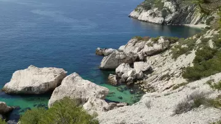

Randonnée dans le Massif de la Sainte-Baume
Il y a aussi le massif de la Sainte Baume, vrai bijou de Provence qui s’impose parmi les autres reliefs avec sa roche calcaire de 1100 mètres de haut. Elle est occupée en partie par une grande forêt de feuillus, donnant un peu plus de fraîcheur, d’humidité et de protection au vent. Une petite route le traverse qui permet de rejoindre le col de l’Espigoulier avec à son sommet, une vue splendide sur Marseille et la mer.
Randonnée sur la Côte Bleue
A découvrir également pour les amateurs de randonnée, la Côte Bleue, moins connue que les calanques mais tout aussi belle et pittoresque. De jolies randonnées face à Marseille et au bord de mer sont à faire, plus accessibles et faciles que celles du massif des Calanques.

Randonnée dans le massif de la Sainte-Victoire
La “montagne” Sainte Victoire est chérie des Aixois. Elle marque le début du Pays d’Aix. Promenez-vous dans les paysages sublimes peints par Paul Cézanne, vous ne pourrez pas plus vous sentir dans le cœur de la Provence.